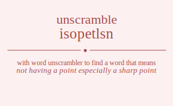

The word found after unscrambling isopetlsn means that not having a point especially a sharp point, serving no useful purpose; having no excuse for being, .
isopetlsn has jumble solution. Please see which words made after unscrambling isopetlsn.
Daily Jumble Solution: pointless
You can use following links to see other word jumble solutions for the same day
earpo isopetlsn lneatg parsni siyfh

Unscrambled 9 letter words from isopetlsn
pointless
Unscrambled 8 letter words from isopetlsn
pistoles
plenists
potlines
toplines
epsilons
Unscrambled 7 letter words from isopetlsn
pistons
postins
spintos
pistols
splints
tonsils
pontils
stepson
topless
splents
telsons
leptons
posties
potsies
sopites
insteps
spinets
nosiest
pintoes
pointes
spinose
stipels
tipless
piolets
pistole
enlists
listens
silents
tinsels
leptins
pintles
plenist
pensils
spinels
splines
entoils
insoles
lesions
lioness
potline
topline
epsilon
pinoles
Unscrambled 6 letter words from isopetlsn
posits
ptosis
pinots
pintos
piston
pitons
points
postin
spinto
opsins
splits
pilots
pistol
spoilt
spoils
splint
tonsil
pontil
estops
pestos
posset
ptoses
stopes
onsets
setons
stenos
stones
netops
pontes
spelts
stoles
slopes
splent
lentos
stolen
telson
lesson
lepton
pleons
pistes
spites
stipes
postie
potsie
sopite
poises
posies
insets
steins
instep
spinet
snipes
spines
enosis
eosins
essoin
noesis
noises
ossein
sonsie
pointe
opines
ponies
islets
istles
sliest
stiles
stipel
plisse
slipes
speils
spiels
spiles
toiles
piolet
polite
pilose
poleis
polies
elints
enlist
inlets
listen
silent
tinsel
leptin
pintle
pensil
spinel
spline
entoil
eloins
insole
lesion
oleins
pinole
Unscrambled 5 letter words from isopetlsn
posts
spots
stops
snots
slots
plots
slops
spits
posit
topis
pisos
snits
pints
snips
spins
pinot
pinto
piton
point
opsin
pions
lists
silts
slits
slipt
spilt
split
lisps
slips
toils
silos
soils
pilot
polis
spoil
lints
linos
lions
loins
noils
pests
septs
steps
estop
pesto
poets
stope
topes
pesos
poses
posse
nests
spent
notes
onset
seton
steno
stone
tones
noses
sones
netop
opens
peons
pones
pelts
slept
spelt
stole
telos
toles
loess
loses
sloes
soles
lopes
poles
slope
lento
enols
lenos
noels
pelon
pleon
sites
sties
piste
spite
stipe
sipes
spies
poise
inset
neist
nites
senti
stein
tines
sines
inept
peins
penis
pines
snipe
spine
eosin
noise
opine
islet
istle
stile
tiles
isles
piles
plies
slipe
speil
spiel
spile
teloi
toile
solei
elint
inlet
lenis
liens
lines
eloin
olein
Unscrambled 4 letter words from isopetlsn
psst
sots
toss
opts
post
pots
spot
stop
tops
sops
snot
tons
sons
pons
lost
lots
slot
loss
sols
plot
lops
pols
slop
sits
pits
spit
tips
piss
psis
sips
topi
piso
pois
nits
snit
tins
sins
pint
nips
pins
snip
spin
into
ions
pion
list
lits
silt
slit
tils
lips
lisp
slip
loti
toil
oils
silo
soil
soli
lint
lins
nils
lino
lion
loin
noil
sets
pest
pets
sept
step
toes
oses
poet
tope
epos
opes
peso
pose
nest
nets
sent
tens
ness
pent
pens
note
tone
eons
noes
nose
ones
sone
nope
open
peon
pone
lest
lets
tels
less
sels
lept
pelt
tole
lose
oles
sloe
sole
lope
pole
lent
lens
enol
leno
lone
noel
site
ties
seis
pies
sipe
nite
tine
sine
pein
pine
lite
tile
isle
leis
lies
lipe
pile
plie
lien
line
Unscrambled 3 letter words from isopetlsn
pst
sot
sos
opt
pot
top
ops
sop
not
ton
nos
ons
son
lot
sol
lop
pol
its
sit
tis
sis
pit
tip
pis
psi
sip
poi
nit
tin
ins
sin
nip
pin
ion
lit
til
lis
lip
oil
lin
nil
set
ess
pet
pes
toe
oes
ose
ope
net
ten
ens
sen
pen
eon
one
let
tel
els
les
sel
ole
tie
sei
pie
lei
lie
Unscrambled 2 letter words from isopetlsn
to
os
so
op
no
on
lo
it
ti
is
si
pi
oi
in
li
et
es
pe
oe
en
ne
el